Lessons
Your teacher groups lessons into modules. Everything a lesson needs sits on one page.
When you finish a lesson, mark it complete and it counts toward your progress.
Switch body systems on in 3D, tap a part to see its real name, then test yourself.
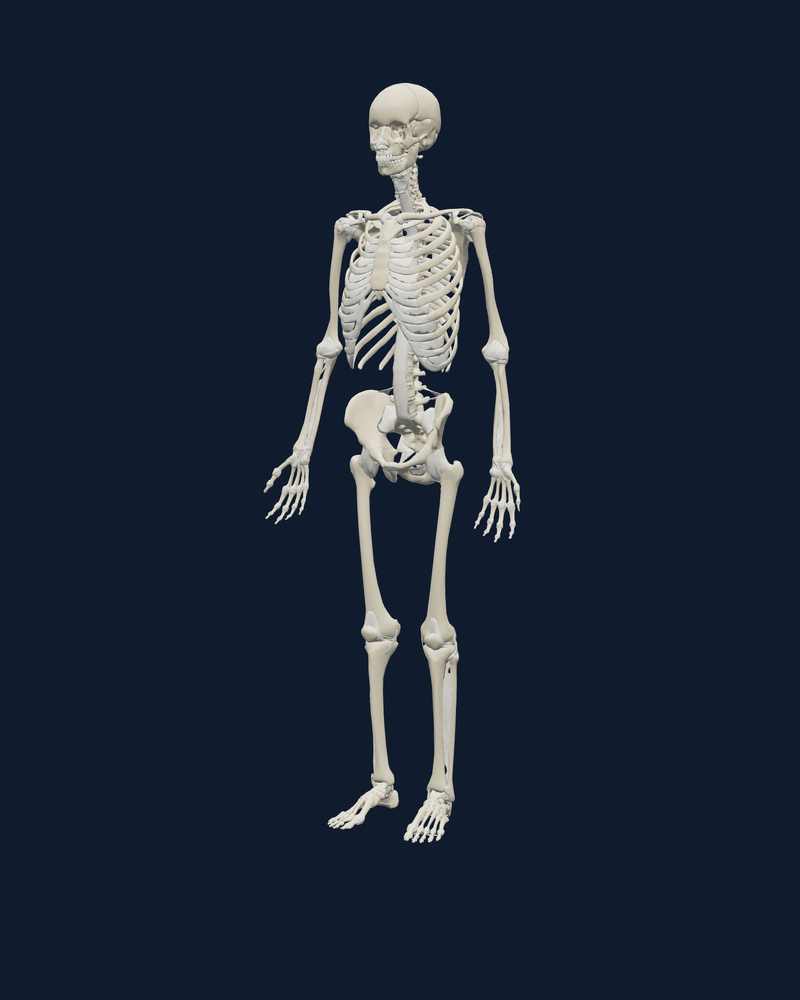
Click any part to see its name.
Bones, muscles, vessels, nerves and organs, each with its own named parts. Turn them on alone or together.
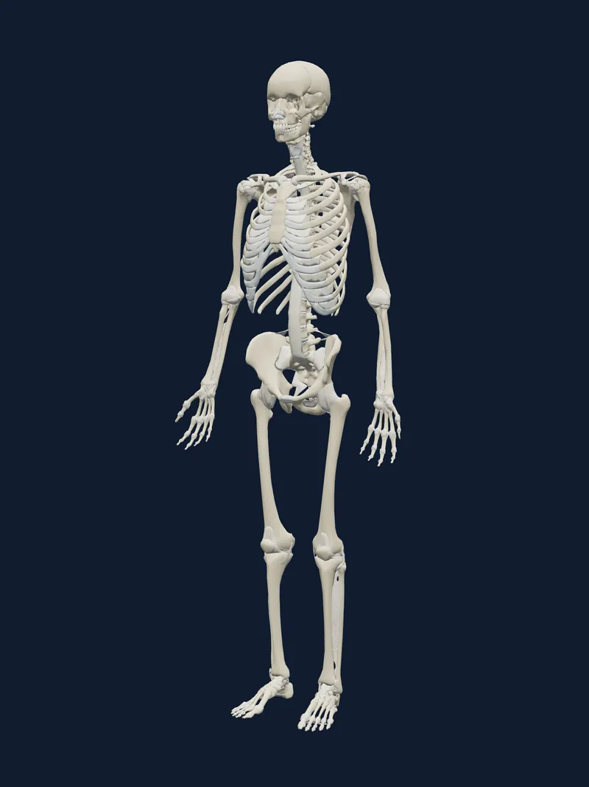
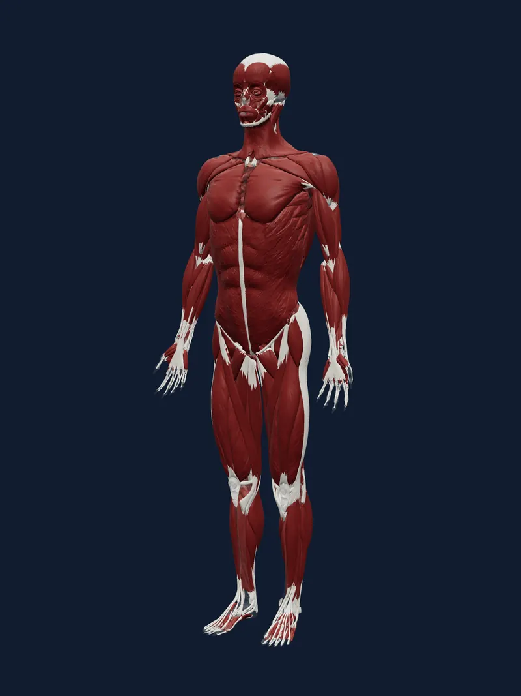
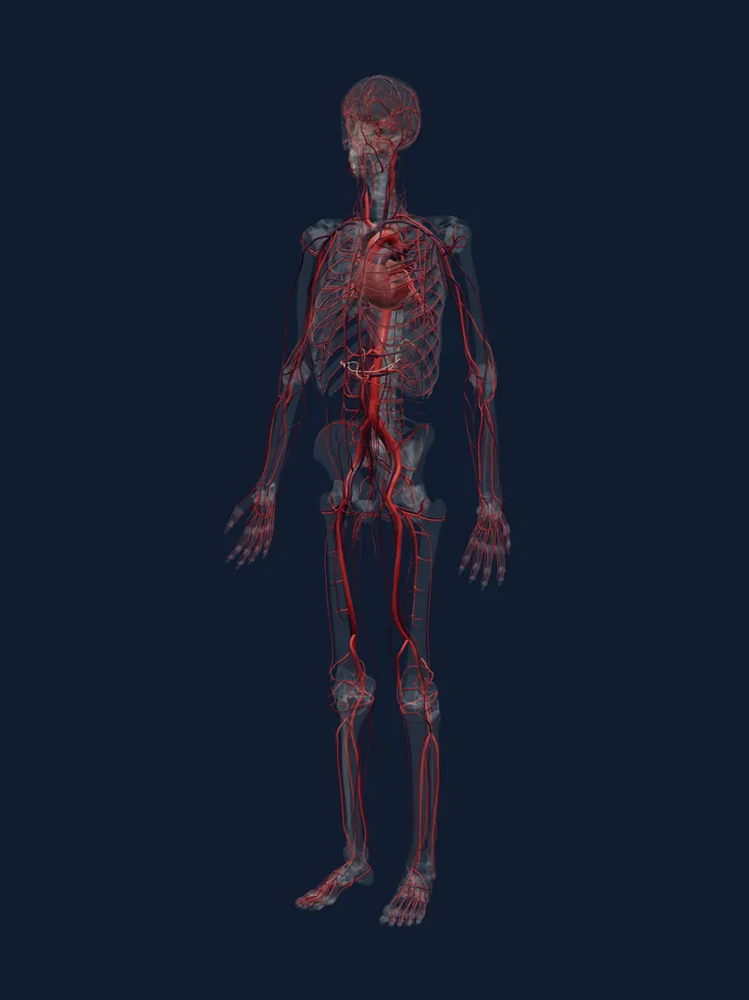
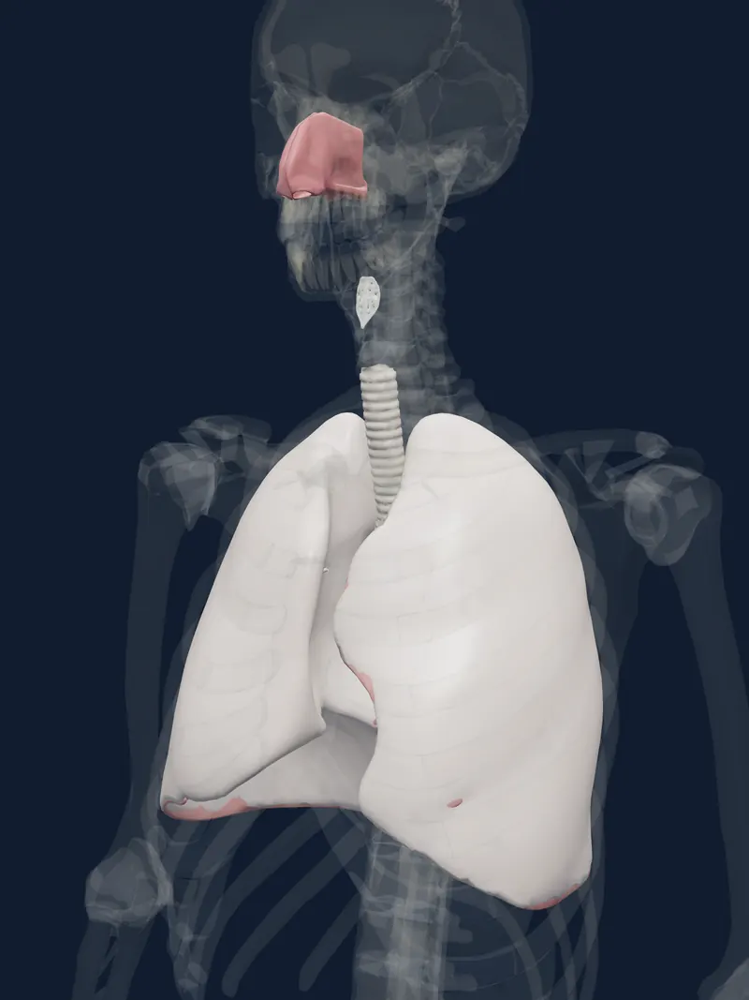
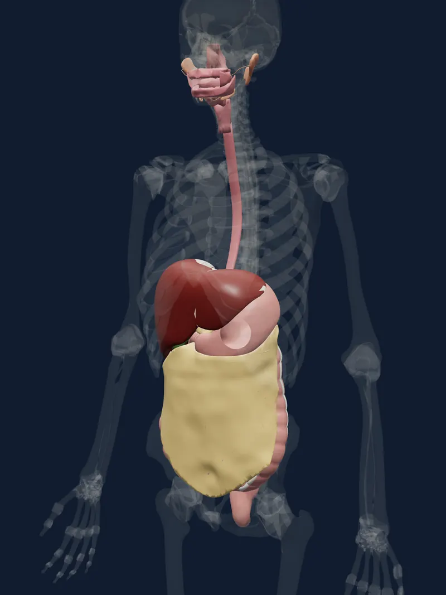
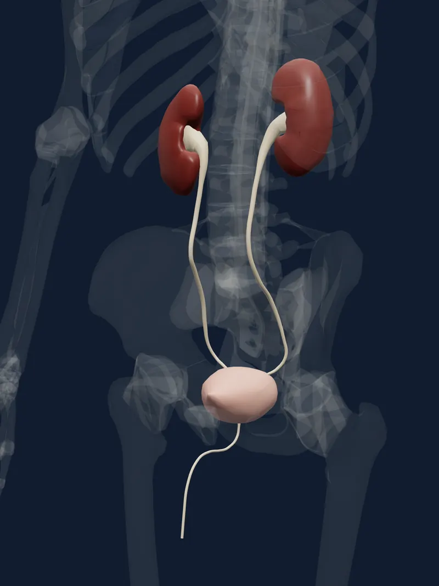
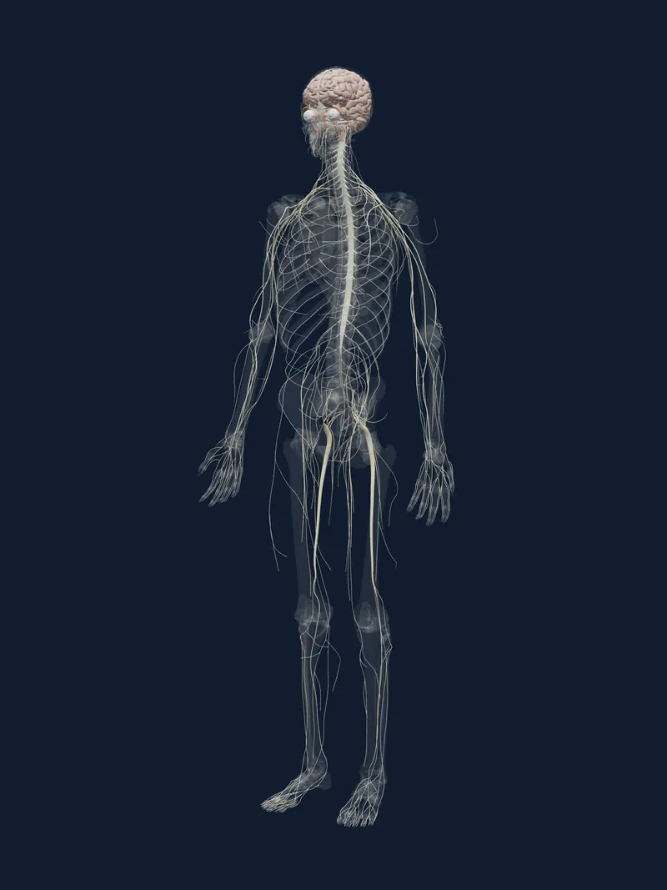
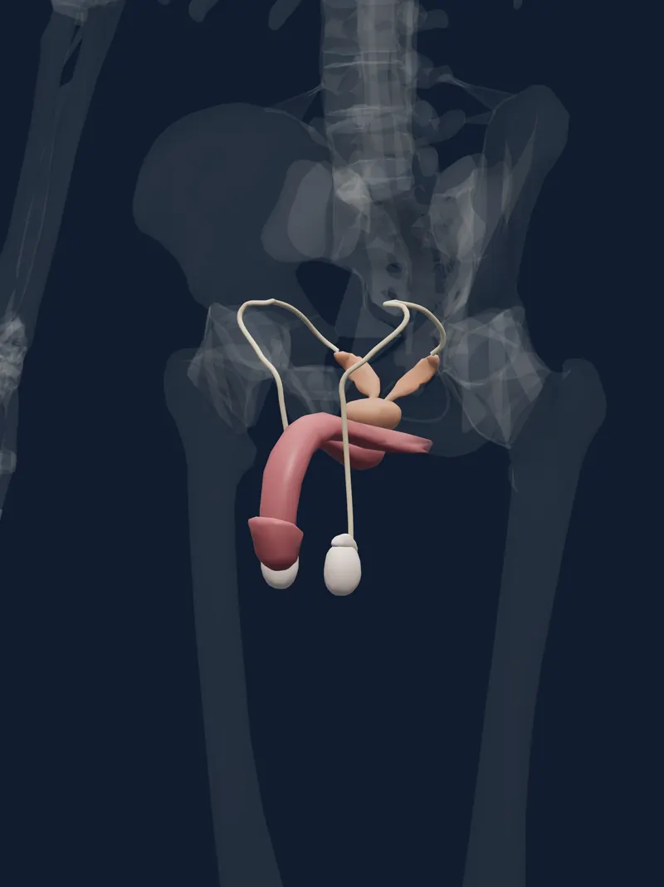
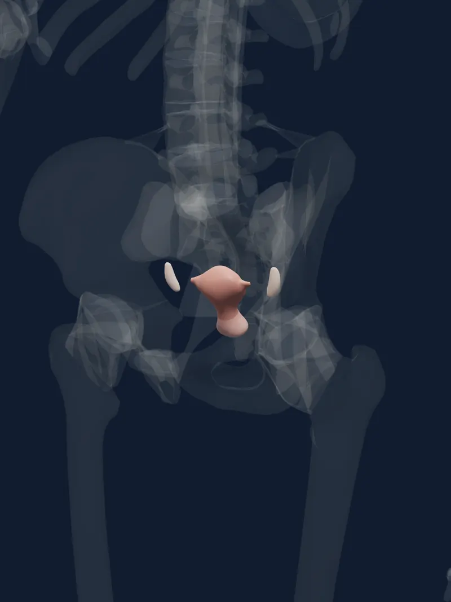
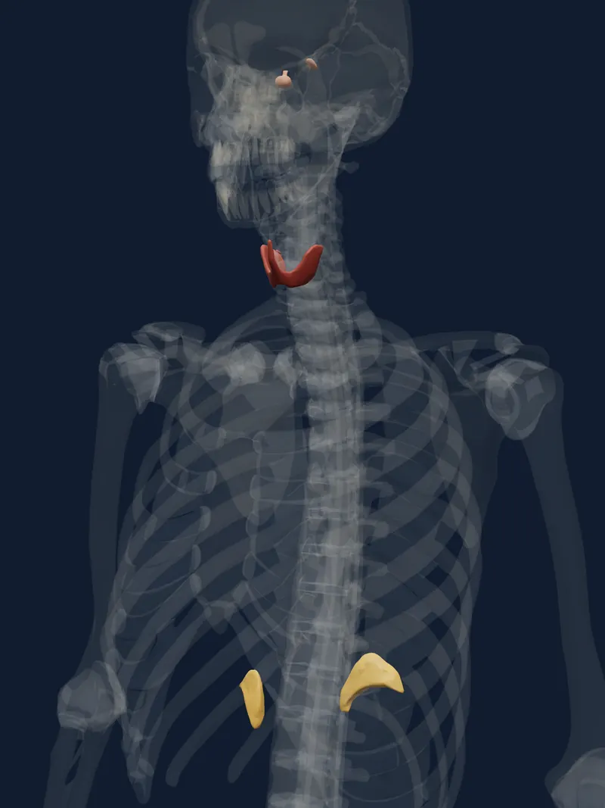
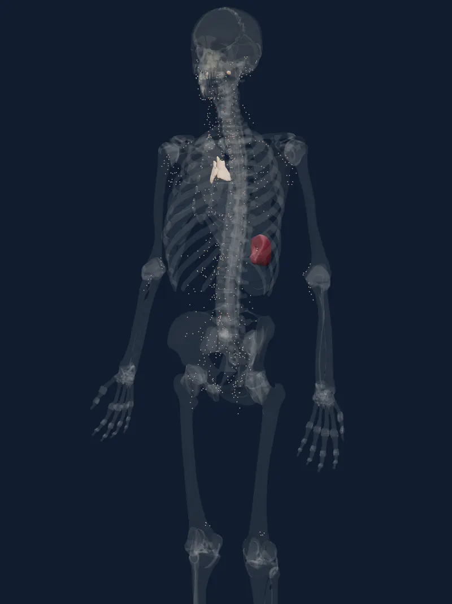
Select a part in the 3D explorer and a panel opens beside the model.
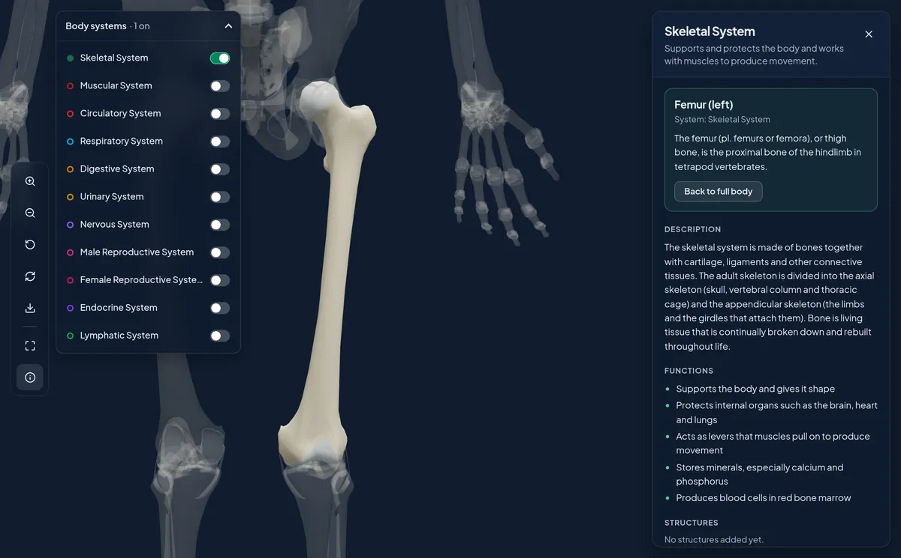
The panel shows the part’s name, its body system and a short definition from the model.
Short facts about each body system, listed with the sources they come from.
Read one of your teacher’s structure descriptions and pick the name that matches. It is never graded.
Your teacher groups lessons into modules. Everything a lesson needs sits on one page.
When you finish a lesson, mark it complete and it counts toward your progress.
Four kinds of question: identification, multiple choice, true or false, and image hotspots, where you click the right spot on a picture.
Your teacher’s question appears here.
Click the spot on your teacher’s image that the question asks about.
With a keyboard, press Enter to place the pin in the centre, then move it with the arrow keys.
Answer a question to see it save.
Answers save as you go. Refresh and you are back in the same attempt with the time you had left.
Practice only. Nothing here is graded or sent anywhere.
Your progress page fills in as you learn. This is how it looks before your first quiz.
Your average and your list of results fill in as your quiz attempts are graded.
You mark each lesson complete yourself. Quizzes then show how much you understood.
Achievements unlock when you reach the goals your teacher sets.
No achievements available yet.
Sign up with the student ID your school gave you and a password of your own.
Turn body systems on in the 3D explorer and open the lessons your teacher publishes.
Answer the quizzes your teacher assigns, then check your scores whenever you like.
Forgot your password? Your teacher resets it; there is no email reset.